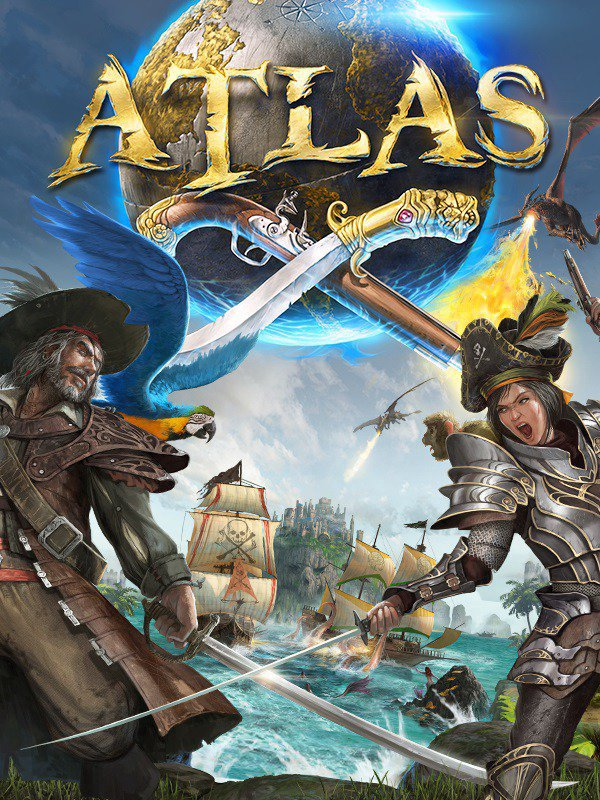

ATLAS
ATLAS
Details
|  | |
| Spielzeit | Nicht gespielt |
| Letzte Aktivität | Nie |
| Hinzugefügt | 19.12.2019 |
| Modifiziert | 12.12.2022 0:46:17 |
| Fertigstellungsstatus | Not Played |
| Bibliothek | Steam |
| Quelle | Steam |
| Plattform | PC (Windows) |
| Veröffentlichungsdatum | 22.12.2018 |
| Community Bewertungen | 40 |
| Kritiker Punkte | |
| Benutzerwertung | |
| Genre | Action Adventure |
| Entwickler | Grapeshot Games Instinct Games |
| Verleger | Grapeshot Games |
| Eigenschaft | Controller Support Co-op Level Editor Multiplayer Single Player Workshop |
| Links | Community Hub Discussions News Store Page PCGamingWiki Workshop |
| Tag | Co-Op Full Controller Support Level Editor Online Pvp Steam Workshop |
Beschreibung
ATLAS is now crossplay enabled to allow PC and Xbox One players to play together in the same world!
From the creators of ARK: Survival Evolved comes ATLAS -- the ultimate pirate experience! Explore a persistent, massive open world with thousands of other players simultaneously. Build your ship, assemble your crew, sail the high seas, search for buried treasure, plunder player-built settlements (or replace them with your own), and conquer the world of ATLAS island by island. Wage war against enemy fleets while you single-handedly command large ships of war -- or divide the responsibilities among your trusted shipmates instead. Dive into the watery depths to explore sunken shipwrecks. Team up with other explorers to discover new lands rich with resources, exotic creatures, and ruins of a bygone time. Become a pirate legend in this ultimate quest for fortune and glory!
Create the Pirate Ship of Your Dreams
From tiny rafts and dinghies to colossal frigates and galleons, your dream vessel is only a shipyard away with our robust ship customization system. Construct your ship piece by piece, give it a name, design the look of your sails, and decide exactly where all the planks, masts, and gunports on your ship should go.
Assemble Your Crew
Recruit other players or hire NPCs to join your crew and aid you on your quest for riches and glory. Whether manning weapons on your ship, hoisting the sails, or helping search for buried treasure on shore, your crew is an essential part of your pirate adventure. Just be sure to keep their stomachs full and give them their fair share of the booty, lest you want a mutiny on your hands…
Explore a Massive World
Physically sail in real-time across a vast ocean, featuring over 700 individual landmasses across 45,000 square kilometers. Discover thousands of points of interest over a number of distinct world regions, each with their own unique resources, creatures, secrets, and dangers!
Shape Your Identity
Choose from a wide range of character customization and cosmetic options to create your specific pirate look. Unlock skills across 15 different disciplines to form your own unique role in the world of ATLAS.
Experience Classic Pirate Action
Become the world’s greatest swashbuckler, a pistol-packing gunslinger, or perhaps a master cannoneer instead. Engage in fierce raids on land-based strongholds, swing from grappling hooks to board enemy ships, or unload volleys of cannonballs into your foe’s hull. The world of ATLAS has no shortage of ways to dispatch your enemies, be it at the end of a sword... or in true pirate fashion… at the end of a rope.
Build Your Organization
Want to create a rich merchant empire that spans from pole to pole? Always wanted to command a fleet of privateers who work for the highest bidder? Or perhaps you’d like to create a government navy and protect the innocent from pirates? In ATLAS, you can build any organization you can think of. Create a settlement for your company and build it piece by piece with our modular construction system. Contest other companies’ land, structures, or ships and add them to your ranks. With the right organization in hand, the world is truly your oyster.
Choose Between PvP and PvE Play
Choose between PvP or PvE play on our official servers:
On a PvP server, everything is up for grabs: be it ships, player inventories, NPC crewmembers, tames, player-built structures, player-owned territory, and lots of other loot. If you can get your hands on it, you can take it for yourself. Do you have what it takes to become the most notorious pirate on the high seas?
Care for a less “cutthroat” experience? Join one of our PvE servers and cooperate with thousands of other players to explore the globe, discover new secrets, and even fight mythical creatures together. Create powerful companies with old friends or build an entire player-run town with some new ones. The world of ATLAS is yours to shape!
Create Mods and Custom Servers
Want to build a World War II Spitfire? Or how about an Arcadian Steampunk Airship floating through a cloud-world? These examples and much more are provided with the ATLAS Dev Kit, where you can effectively create whatever large-scale action game you want to see: all supported by the database-driven network technology that powers ATLAS. Unofficial ATLAS mods can be of any size and configuration, while a visual map tool lets server hosts layout their own complete custom world -- all dynamically streamed to the client during gameplay.
Play in Singleplayer and Non-Dedicated Private Sessions
In addition to experiencing ATLAS on our official/unofficial servers with thousands of other players, you can now enjoy ATLAS by yourself in our Singleplayer mode, or with up to eight friends privately in our Non-Dedicated Server mode. Adjust the game to suit your preferences and enjoy your own private version of ATLAS.
And Much, Much More
Only a fraction of ATLAS’ features and content are outlined above, with many more to come throughout the game’s Early Access development period.
From the creators of ARK: Survival Evolved comes ATLAS -- the ultimate pirate experience! Explore a persistent, massive open world with thousands of other players simultaneously. Build your ship, assemble your crew, sail the high seas, search for buried treasure, plunder player-built settlements (or replace them with your own), and conquer the world of ATLAS island by island. Wage war against enemy fleets while you single-handedly command large ships of war -- or divide the responsibilities among your trusted shipmates instead. Dive into the watery depths to explore sunken shipwrecks. Team up with other explorers to discover new lands rich with resources, exotic creatures, and ruins of a bygone time. Become a pirate legend in this ultimate quest for fortune and glory!
Create the Pirate Ship of Your Dreams
From tiny rafts and dinghies to colossal frigates and galleons, your dream vessel is only a shipyard away with our robust ship customization system. Construct your ship piece by piece, give it a name, design the look of your sails, and decide exactly where all the planks, masts, and gunports on your ship should go.
Assemble Your Crew
Recruit other players or hire NPCs to join your crew and aid you on your quest for riches and glory. Whether manning weapons on your ship, hoisting the sails, or helping search for buried treasure on shore, your crew is an essential part of your pirate adventure. Just be sure to keep their stomachs full and give them their fair share of the booty, lest you want a mutiny on your hands…
Explore a Massive World
Physically sail in real-time across a vast ocean, featuring over 700 individual landmasses across 45,000 square kilometers. Discover thousands of points of interest over a number of distinct world regions, each with their own unique resources, creatures, secrets, and dangers!
Shape Your Identity
Choose from a wide range of character customization and cosmetic options to create your specific pirate look. Unlock skills across 15 different disciplines to form your own unique role in the world of ATLAS.
Experience Classic Pirate Action
Become the world’s greatest swashbuckler, a pistol-packing gunslinger, or perhaps a master cannoneer instead. Engage in fierce raids on land-based strongholds, swing from grappling hooks to board enemy ships, or unload volleys of cannonballs into your foe’s hull. The world of ATLAS has no shortage of ways to dispatch your enemies, be it at the end of a sword... or in true pirate fashion… at the end of a rope.
Build Your Organization
Want to create a rich merchant empire that spans from pole to pole? Always wanted to command a fleet of privateers who work for the highest bidder? Or perhaps you’d like to create a government navy and protect the innocent from pirates? In ATLAS, you can build any organization you can think of. Create a settlement for your company and build it piece by piece with our modular construction system. Contest other companies’ land, structures, or ships and add them to your ranks. With the right organization in hand, the world is truly your oyster.
Choose Between PvP and PvE Play
Choose between PvP or PvE play on our official servers:
On a PvP server, everything is up for grabs: be it ships, player inventories, NPC crewmembers, tames, player-built structures, player-owned territory, and lots of other loot. If you can get your hands on it, you can take it for yourself. Do you have what it takes to become the most notorious pirate on the high seas?
Care for a less “cutthroat” experience? Join one of our PvE servers and cooperate with thousands of other players to explore the globe, discover new secrets, and even fight mythical creatures together. Create powerful companies with old friends or build an entire player-run town with some new ones. The world of ATLAS is yours to shape!
Create Mods and Custom Servers
Want to build a World War II Spitfire? Or how about an Arcadian Steampunk Airship floating through a cloud-world? These examples and much more are provided with the ATLAS Dev Kit, where you can effectively create whatever large-scale action game you want to see: all supported by the database-driven network technology that powers ATLAS. Unofficial ATLAS mods can be of any size and configuration, while a visual map tool lets server hosts layout their own complete custom world -- all dynamically streamed to the client during gameplay.
Play in Singleplayer and Non-Dedicated Private Sessions
In addition to experiencing ATLAS on our official/unofficial servers with thousands of other players, you can now enjoy ATLAS by yourself in our Singleplayer mode, or with up to eight friends privately in our Non-Dedicated Server mode. Adjust the game to suit your preferences and enjoy your own private version of ATLAS.
And Much, Much More
Only a fraction of ATLAS’ features and content are outlined above, with many more to come throughout the game’s Early Access development period.